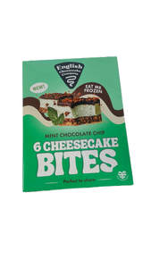
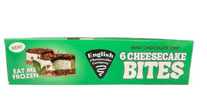
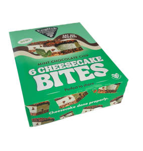
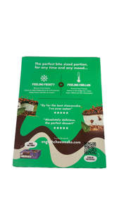
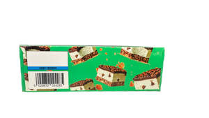
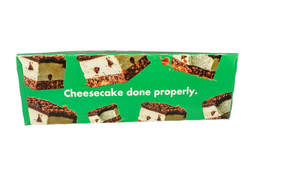

Trade Mark Journal No.2025/010 7 March 2025
UK00004165489 26 February 2025 (29,30,35)






3 Dimensional
- Class 29
- Meat, fish, poultry and game; meat extracts; preserved, frozen, dried and cooked fruits and vegetables; jellies, jams, compotes; eggs; milk and milk products; edible oils and fat; chilled dairy desserts; fruit-based fillings for cakes and pies; fruit desserts; desserts made from milk products; chips (fruit -); fruit jams; dried fruit; sliced fruit; glazed fruits; candied fruits; mixtures of fruit and nuts; truffle paste; truffle-based spread products (truffle creams); hazelnuts, prepared; ground almonds; almonds (prepared -); cheese-based snack foods; artificial cream; cheese products; buttercream; cream, being dairy products; dairy-based beverages; dairy-based whipped topping; flavoured milk beverages; dried nuts; prepared nuts; roasted nuts.
- Class 30
- Coffee, tea, cocoa and artificial coffee; rice; tapioca and sago; flour and preparations made from cereals; bread, pastries and confectionery; edible ices; sugar, honey, treacle; yeast, baking-powder; salt; mustard; vinegar, sauces [condiments]; spices; ice; dessert products; cheesecake; cakes; cupcakes; sponge cakes; cake preparations; preparations for making bakery products; ice cream; frozen desserts; frozen yogurt; frozen cheesecake; cookie dough; frozen cookie dough; vegan cakes and desserts; gluten-free bakery products and desserts; aromatic preparations for cakes; flavourings for cakes other than essential oils; pastries, tarts and biscuits (cookies); chocolate-based fillings for cakes and pies; deep chocolate cake made with chocolate sponge; cake frosting; chocolate cake; almond cake; cake bars; fruit cakes; tea cakes; cream cakes; iced cakes; iced sponge cakes; ice cream cakes; sponge fingers [cakes]; dough for cakes; flavourings for cakes; aromatic preparations for cakes; chocolate decorations for cakes; candy decorations for cakes; mixtures for making cakes; oat cakes for human consumption; cake decorations made of candy; chocolate covered cakes; prepared desserts [chocolate based]; chocolate; chocolate chips; chocolate pastries; liqueur chocolates; chocolate confectionery products; chocolate-coated nuts; chocolate decorations for confectionery items; biscuits containing chocolate flavoured ingredients; fruit pastries; fruited scones; fruit cake snacks; fruit filled pastry products; flavourings made from fruits; pastries containing creams and fruit; flavourings made from fruits [other than essential oils]; food mixtures consisting of cereal flakes and dried fruits; vanilla; vanilla flavourings for food or beverages; pecan logs; fudge; chocolate fudge; almond cake; flavourings of almond; pralines; caramel; butterscotch chips; honeycomb toffee; beverages containing chocolate; coffee mixtures; decaffeinated coffee; ground coffee; chocolate coffee; coffee essence; coffee beverages; coffee flavourings; caffeine-free coffee; prepared coffee and coffee-based beverages; aerated beverages [with coffee, cocoa or chocolate base]; extracts of coffee for use as flavours in foodstuffs; tea extracts; darjeeling tea; green tea; tea beverages; tea essences; herbal tea; ginger tea; iced tea; earl grey tea; ginseng tea [insamcha]; fruit flavoured tea [other than medicinal]; preparations for making beverages [tea based].
- Class 35
- Advertising; business management; business administration; office functions; retail, wholesale and online retail and wholesale store services connected with the sale of Meat, fish, poultry and game, meat extracts, preserved, frozen, dried and cooked fruits and vegetables, jellies, jams, compotes, eggs, milk and milk products, edible oils and fat, chilled dairy desserts, fruit-based fillings for cakes and pies, fruit desserts, desserts made from milk products, chips (fruit -), fruit jams, dried fruit, sliced fruit, glazed fruits, candied fruits, mixtures of fruit and nuts, truffle paste, truffle-based spread products (truffle creams), hazelnuts, prepared, ground almonds, almonds (prepared -), cheese-based snack foods, artificial cream, cheese products, buttercream, cream, being dairy products, dairy-based beverages, dairy-based whipped topping, flavoured milk beverages, dried nuts, prepared nuts, roasted nuts, Coffee, tea, cocoa and artificial coffee, rice, tapioca and sago, flour and preparations made from cereals, bread, pastries and confectionery, edible ices, sugar, honey, treacle, yeast, baking-powder, salt, mustard, vinegar, sauces [condiments], spices, ice, dessert products, cheesecake, cakes, cupcakes, sponge cakes, cake preparations, preparations for making bakery products, ice cream, frozen desserts, frozen yogurt, frozen cheesecake, cookie dough, frozen cookie dough, vegan cakes and desserts, gluten-free bakery products and desserts, aromatic preparations for cakes, flavourings for cakes other than essential oils, pastries, tarts and biscuits (cookies), chocolate-based fillings for cakes and pies, deep chocolate cake made with chocolate sponge, cakes, cake frosting, chocolate cake, almond cake, cake bars, fruit cakes, tea cakes, cream cakes, iced cakes, iced sponge cakes, ice cream cakes, sponge fingers [cakes], dough for cakes, flavourings for cakes, aromatic preparations for cakes, chocolate decorations for cakes, candy decorations for cakes, mixtures for making cakes, oat cakes for human consumption, cake decorations made of candy, chocolate covered cakes, prepared desserts [chocolate based], chocolate, chocolate chips, chocolate pastries, liqueur chocolates, chocolate confectionery products, chocolate-coated nuts, chocolate decorations for confectionery items, biscuits containing chocolate flavoured ingredients, fruit pastries, fruited scones, fruit cake snacks, fruit filled pastry products, flavourings made from fruits, pastries containing creams and fruit, flavourings made from fruits [other than essential oils], food mixtures consisting of cereal flakes and dried fruits, vanilla, vanilla flavourings for food or beverages, pecan logs, fudge, chocolate fudge, almond cake, flavourings of almond, pralines, caramel, butterscotch chips, honeycomb toffee, beverages containing chocolate, coffee mixtures, decaffeinated coffee, ground coffee, chocolate coffee, coffee essence, coffee beverages, coffee flavourings, caffeine-free coffee, prepared coffee and coffee-based beverages, aerated beverages [with coffee, cocoa or chocolate base], extracts of coffee for use as flavours in foodstuffs, tea extracts, darjeeling tea, green tea, tea beverages, tea essences, herbal tea, ginger tea, iced tea, earl grey tea, ginseng tea [insamcha], fruit flavoured tea [other than medicinal], preparations for making beverages [tea based]; information, advisory and consultancy services relating to all the aforesaid services.
The English Cheesecake Company Limited
Representative: Stobbs